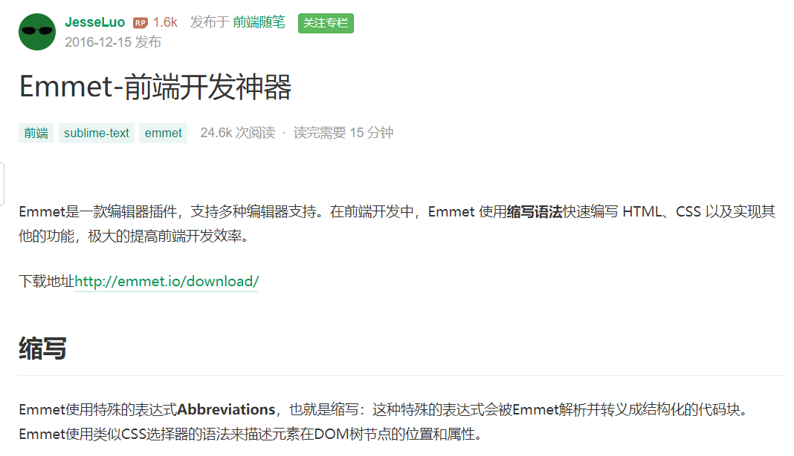

HTML 指的是超文本标记语言: HyperText Markup Language
HTML 不是一种编程语言，而是一种标记语言
标记语言是一套标记标签 (markup tag)
HTML 使用标记标签来描述网页
HTML 文档包含了HTML 标签及文本内容
HTML文档也叫做 web 页面

HTML 元素以开始标签起始
HTML 元素以结束标签终止
元素的内容是开始标签与结束标签之间的内容
某些 HTML 元素具有空内容（empty content）
空元素在开始标签中进行关闭（以开始标签的结束而结束）
大多数 HTML 元素可拥有属性
HTML 元素可以设置属性
属性可以在元素中添加附加信息
属性一般描述于开始标签
属性总是以名称/值对的形式出现，比如：name="value"。
属性值应该始终被包括在引号内。
双引号是最常用的，不过使用单引号也没有问题。
提示: 在某些个别的情况下，比如属性值本身就含有双引号，那么您必须使用单引号，例如：name='John "ShotGun" Nelson'
请确保将 HTML 标题 标签只用于标题。不要仅仅是为了生成粗体或大号的文本而使用标题。
搜索引擎使用标题为您的网页的结构和内容编制索引。
因为用户可以通过标题来快速浏览您的网页，所以用标题来呈现文档结构是很重要的。
应该将 h1 用作主标题（最重要的），其后是 h2（次重要的），再其次是 h3，以此类推。
一些字符在 HTML 中拥有特殊的含义，比如小于号 (<) 用于定义 HTML 标签的开始。如果我们希望浏览器正确地显示这些字符，我们必须在 HTML 源码中插入字符实体。 字符实体有三部分：一个和号 (&)，一个实体名称，或者 # 和一个实体编号，以及一个分号 (;)。 要在 HTML 文档中显示小于号，我们需要这样写：< 或者 < 使用实体名称而不是实体编号的好处在于，名称相对来说更容易记忆。而这么做的坏处是，并不是所有的浏览器都支持最新的实体名称，然而几乎所有的浏览器对实体编号的支持都很好。 注意：实体对大小写敏感。
关于HTML转义相关的参考资料：
HTML转义简介
在线HTML转义工具
段落balabala... 下面来一个分隔线：
一个新的段落开始了，balalala。。。
我们无法确定 HTML 被显示的确切效果。屏幕的大小，以及对窗口的调整都可能导致不同的结果。
对于 HTML，无法通过在 HTML 代码中添加额外的空格或换行来改变输出的效果。
当显示页面时，浏览器会移除源代码中多余的空格和空行。所有连续的空格或空行都会被算作一个空格。
需要注意的是，HTML 代码中的所有连续的空行（换行）也被显示为一个空格。
这个段落 在源代码中 包含许多行 但是浏览器 忽略了它们。
这个段落 在源代码 中 包含 许多行和空格 但是 浏览器 忽略了 它们。
段落的行数依赖于浏览器窗口的大小。如果调节浏览器窗口的大小，将改变段落中的行数。
加粗文本--标签<b>
斜体文本--标签<i>
着重文本--标签<em>
加重语气文本--标签<strong>
小号字体--标签<small>
大号字体--标签<big>---但是vscode标签显示红色，不知道为啥
我是正常字下标文本--标签<sub>
我是正常字上标文本--标签<sup>
我是正常字插入文本--标签<ins>我是正常字
我是正常字删除文本--标签<del>我是正常字
标签<code>定义计算机代码